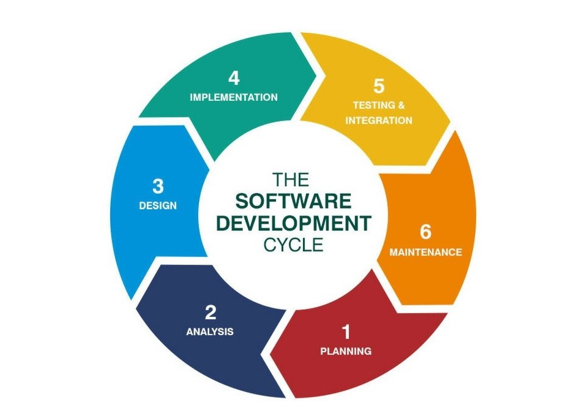

Computer Programming
Familiar with core progrmming concepts such as iterations, branching, arrays, and file I/O. Worked on multiple projects in C++ and Java. Some of these include, building a maze runner game, coding an encryption program that makes use of Caesar Cipher, and designing an interactive trip planner.

Web Applications
Experience with building websites using HTML, CSS, and JavaScript. Currently taking a course on Web Development by Harvard University to deploy full-scale web applications on the internet.

SDLC
Worked on a library management software in high-school which involved going through the whole software development life cycle across one year. Existing shortcomings were identified based on which a program was written, tested, and then deployed to the end users.